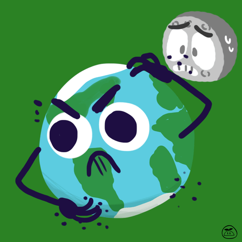

Terra
Planeta Pământ (numită și Terra sau „Planeta albastră”) este a treia planetă după distanța față de Soare și a cincea ca mărime în Sistemul Solar. Când desemnează planeta (și nu solul), cuvântul se scrie cu majusculă. Terra face parte dintre planetele interioare ale Sistemului Solar (planetele aflate în interiorul centurii de asteroizi). Este cea mai mare planetă telurică din sistemul solar, și singura din Universul observabil cunoscută ca adăpostind viață (controverse legate de existența vieții extraterestre continuă să existe).Terra s-a format acum aproximativ 4,57 miliarde (4,57×109) de ani, în orice caz cu peste patru miliarde de ani în urmă.
Conform ipotezei celei mai vehiculate în prezent, în urma impactului planetei Theia cu Pământul, cu 4,527 miliarde de ani în urmă, s-ar fi format Luna. Pentru comparație, vârsta calculată a Universului este de circa 13,7 miliarde de ani. Suprafața Pământului este acoperită în proporție de 70,8% de apă, restul de 29,2% fiind solid și „uscat”. Zona acoperită de apă este împărțită în oceane, iar uscatul se împarte în continente. De la formarea sa Pământul a trecut prin numeroase procese geologice și biologice majore, astfel încât toate urmele condițiilor sale inițiale au fost șterse. Suprafața exterioară a planetei Terra este împărțită în mai multe plăci tectonice, care de-a lungul timpului se deplasează unele față de celelalte. Miezul planetei este activ (fierbinte și lichid), fiind format din mantaua topită și miezul metalic, generator al câmpului magnetic. Condițiile atmosferice și de la suprafață, care au permis apariția vieții pe Terra, au fost la rândul lor influențate în mod decisiv de către diversele forme de viață. Acestea se află într-o balanță ecologică fragilă, în permanentă schimbare. Totuși, în timp ce Terra adăpostește viața, Venus este în prezent o planetă neospitalieră. Venus este o planetă extrem de uscată, iar în atmosfera ei, compusă majoritar din gaz carbonic, se produce un intens efect de seră, care ridică temperatura la suprafața ei la valori care depășesc 450 de grade celsius.
Între Terra și restul Universului există o permanentă interacțiune. Astfel, Luna este cauza mareelor. În afară de asta, ea a infuențat continuu viteza mișcării de rotație a Terrei. Toate corpurile din jurul globului terestru sunt atrase spre Terra, forța de atracție numindu-se gravitație, iar accelerația cu care aceste corpuri cad în câmpul gravitațional se numește accelerație gravitațională (notată cu "g" = 9,81 m/s2). Se crede că motivul apariției oceanelor a fost o „ploaie” de comete din perioada timpurie a Pământului. Impacturile ulterioare cu asteroizi au modificat și ele mediul înconjurător într-o manieră decisivă. Schimbările de orbită ale planetei pot fi considerate răspunzătoare pentru glaciațiunile produse de-a lungul istoriei, care au acoperit suprafața terestră cu un strat de gheață. Terra nu are alți sateliți naturali în afară de Lună. Corpul ceresc Cruithne a fost calificat în mod greșit drept satelit al Terrei, fiind în realitate un asteroid. Cruithne a fost descoperit în 1986; el urmează o orbită eliptică în jurul Soarelui, asemănătoare cu orbita Terrei, și care nu se apropie prea mult de ea. De pe Pământ orbita lui se vede în formă de potcoavă.

|
 |
|---|